Fortaleza
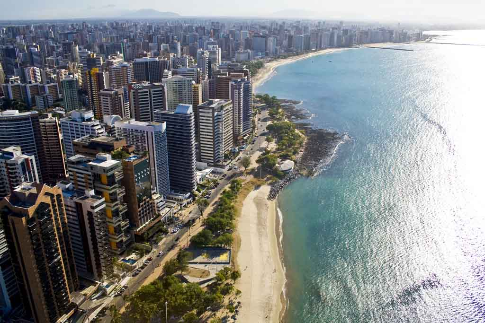Fortaleza, capital do estado do Ceará, é um dos destinos turísticos mais populares do Brasil. Conhecida por suas belas praias, rica história, cultura vibrante e infraestrutura moderna, Fortaleza atrai turistas de todo o mundo, especialmente os que buscam relaxamento e diversão em um ambiente tropical. A cidade oferece uma grande variedade de opções para todos os tipos de visitantes, desde aqueles que desejam explorar a natureza e o mar até os que querem vivenciar as tradições culturais e gastronômicas nordestinas. Fortaleza é também um ponto de partida para explorar outras belezas do Ceará, como o Parque Nacional de Jericoacoara e a Praia das Fontes.
Com um forte apelo tanto para o turismo de lazer quanto para o turismo de negócios, Fortaleza é uma cidade que combina modernidade e tradição, além de ter uma vibrante vida noturna e um dos maiores carnavais do Brasil.
Principais pontos turísticos
- Praia do Futuro 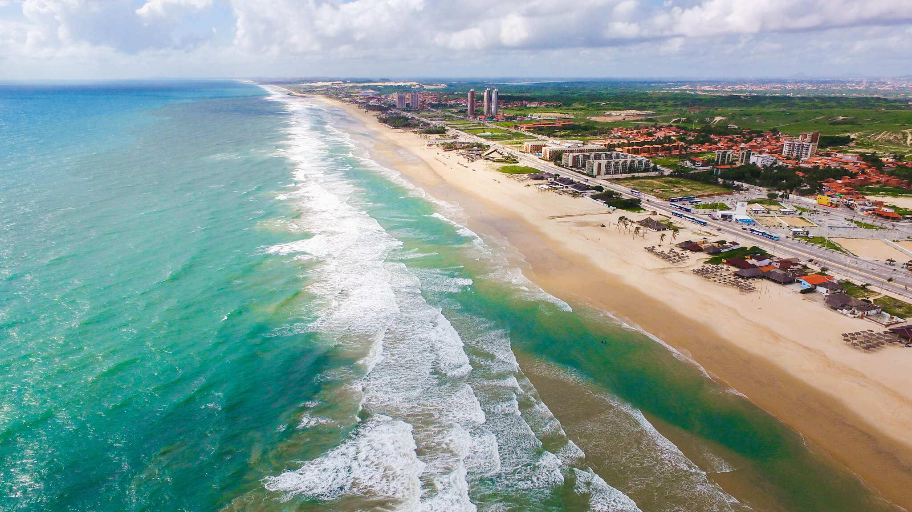
- Centro Dragão do Mar de Arte e Cultura 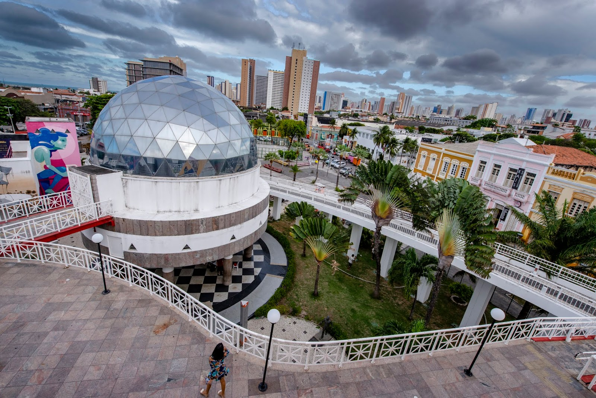
- Ceará Sporting Club (Estádio Castelão) 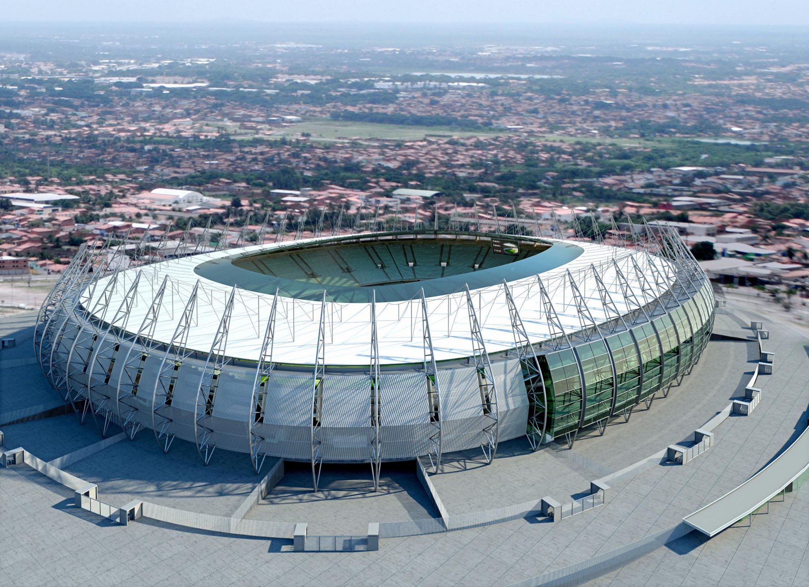
- Mercado Central de Fortaleza 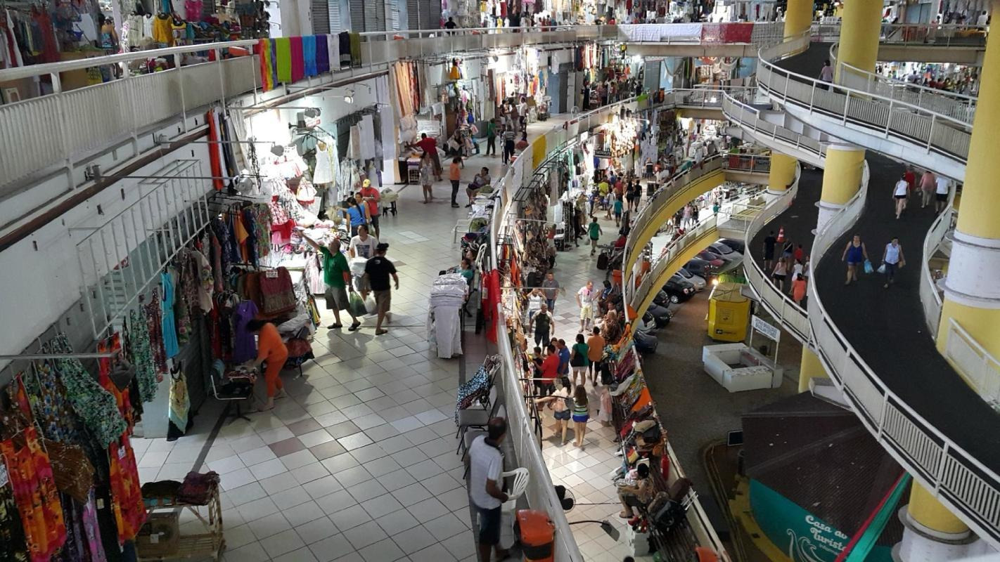
- Praia de Jericoacoara 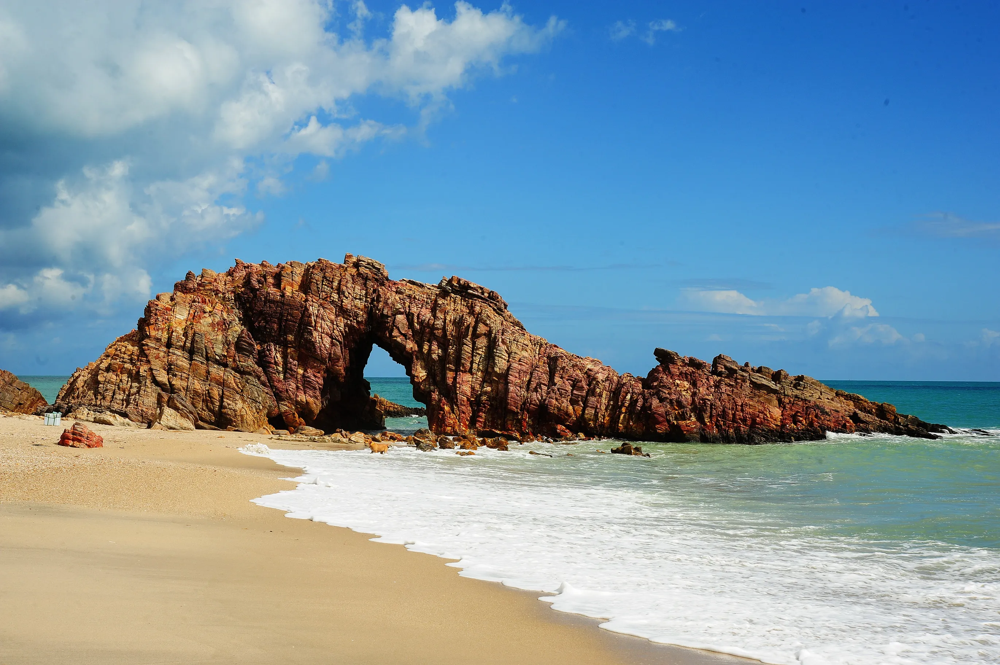
- Igreja de São José de Ribamar 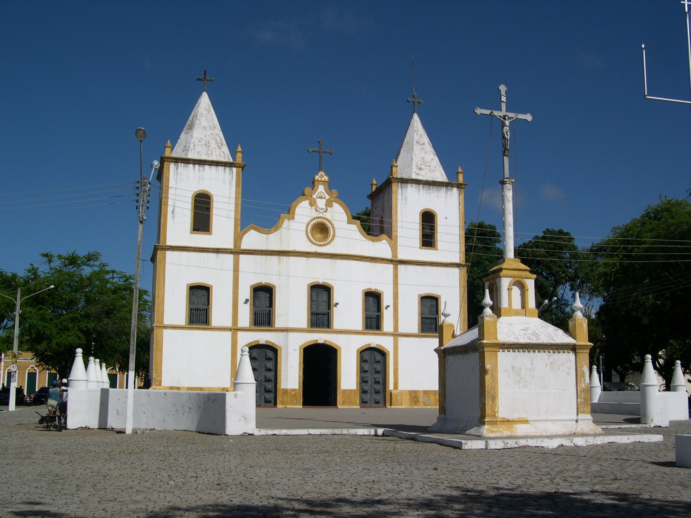
- Farol do Mucuripe 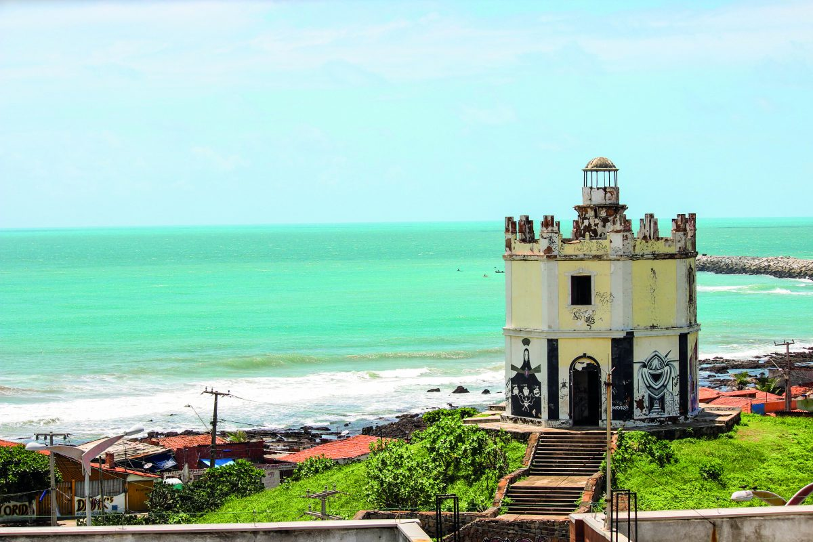
A Praia do Futuro é uma das mais famosas e frequentadas de Fortaleza. Com suas águas mornas e fortes ondas, é ideal para quem gosta de atividades aquáticas como o surf. Ao longo da praia, há diversas barracas de praia que oferecem frutos do mar frescos, além de uma infraestrutura completa com bares e restaurantes. É o local perfeito para passar o dia, curtindo o sol e a brisa do mar.
O Dragão do Mar é um dos maiores centros culturais de Fortaleza. Localizado na região central da cidade, o centro oferece uma vasta programação cultural, incluindo exposições de arte, apresentações de teatro, dança e cinema. Além disso, o Dragão do Mar também abriga o Museu Cearense, o Planetário e o Teatro Dragão do Mar, tornando-se um espaço de destaque para a cultura e arte da cidade.
O Estádio Castelão é um dos maiores estádios de futebol do Brasil e sede dos jogos do Ceará Sporting Club e Fortaleza Esporte Clube, além de ser um dos locais importantes para o Copa do Mundo 2014. Para os amantes de futebol, é uma parada obrigatória, além de ser um centro de eventos e shows.
O Mercado Central é uma verdadeira imersão na cultura e no artesanato local. Localizado no centro da cidade, o mercado oferece uma ampla variedade de produtos típicos do Ceará, como artesanato em renda, bordados, artigos em couro e alimentos regionais, como o famoso queijo coalho e as castanhas de caju. Também é possível encontrar uma grande variedade de roupas e souvenires.
Embora não esteja exatamente em Fortaleza, Jericoacoara está a cerca de 300 km da cidade e é um destino turístico famoso internacionalmente. A Praia de Jericoacoara é famosa por suas dunas de areia branca, águas cristalinas e a famosa Pedra Furada. Com suas belas paisagens e tranquilidade, é um local popular para esportes como kitesurf e windsurf, além de ser ideal para quem deseja relaxar em meio à natureza.
A Igreja de São José de Ribamar é um marco religioso de Fortaleza. Situada no centro da cidade, a igreja possui uma arquitetura imponente e é um importante ponto de peregrinação. O edifício é um exemplo da religiosidade local e uma parte significativa do patrimônio histórico da cidade.
O Farol do Mucuripe, localizado na Praia do Mucuripe, é um dos pontos turísticos mais tradicionais de Fortaleza. O farol é um dos cartões-postais da cidade e oferece uma bela vista da orla marítima e do Porto do Mucuripe. Além disso, a área ao redor do farol é perfeita para caminhadas à beira-mar.
Principais pontos gastronômicos
- Lá Na Roça 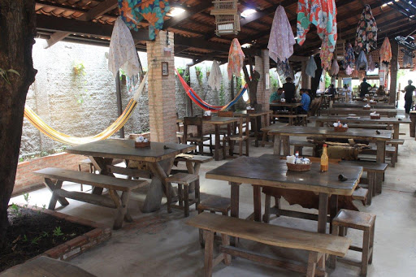
- Localização: Periferia de Fortaleza.
- Cemoara 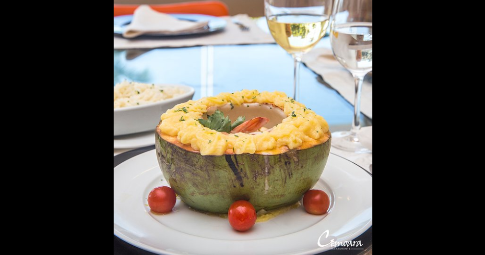
- Localização: Hotel Golden Fortaleza.
- Jardim do Alchymist 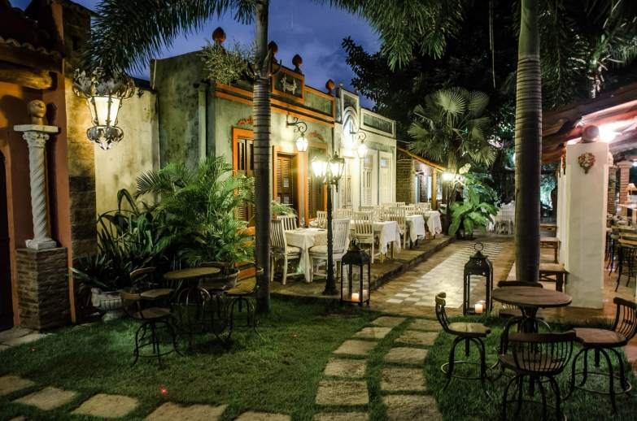
- Localização: Bairro Meireles.
- Boteco Praia 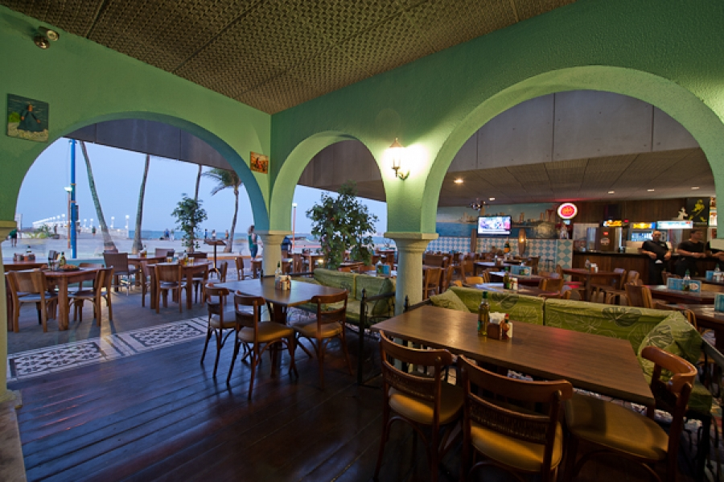
- Localização: Praia do Meireles.
No Lá Na Roça, é possível saborear o inigualável tempero nordestino e as suas dezenas de pratos possíveis. O Restaurante fica um pouco afastado da cidade, entretanto isso só aumenta o charme do lugar, um casarão decorado ao estilo do sertão, com muita madeira e chita. O restaurante oferece pratos típicos como o arroz de leite, baião de dois e galinha à cabidela, e nos finais de semana aumenta a variedade do cardápio.
O Cemoara é um restaurante especializado em comida contemporânea e carrega um nome que tem anos de tradição e um dos melhores onde comer em Fortaleza. O carro-chefe do menu é o famoso Camarão no Coco, que além de delicioso tem uma apresentação de arrancar suspiros. O ambiente traz uma atmosfera artística, jovem e com o frescor da praia, que aliás está do outro lado rua. Um lugar para apreciar arte, paisagens e sabores.
Assim como o próprio nome sugere, o Jardim do Alchymist é um restaurante ambientado em um jardim, idealizado pelo italiano Giorgio Bonelli, detentor da rede de hotéis Alchymist Luxury Group. A princípio, o restaurante une o requintado estilo dos hotéis da rede com o charme tropical de Fortaleza. No cardápio, opções com bastante peixes e frutos do mar, além de massas, pastéis e risotos. O lugar também é perfeito para um almoço à dois, com um clima que abusa do verde das plantas e luz ambiente.
O Boteco Praia é um dos melhores bares para apreciar uma boa comida de boteco não apenas por sua localização como também pelo seu cardápio de qualidade que inclui canecas de chopp bem geladas. Um ótimo local de ambiente informal, ideal para os dias quentes. O destaque do Boteco Praia são os pratos, como a coxinha de caranguejo ou o escondidinho cearense.
Principais pontos culturais
- Teatro José de Alencar 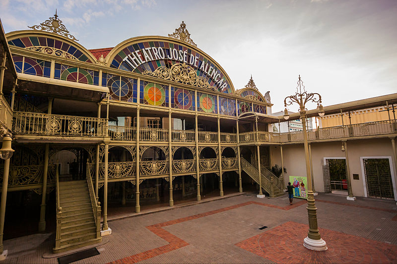
- Localização: Centro de Fortaleza.
- Museu Cearense 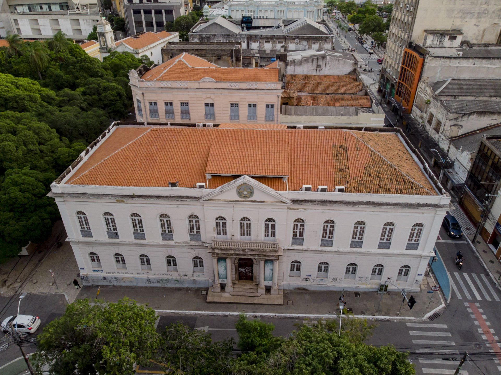
- Localização: Praia de Iracema.
- Centro Cultural Banco do Nordeste 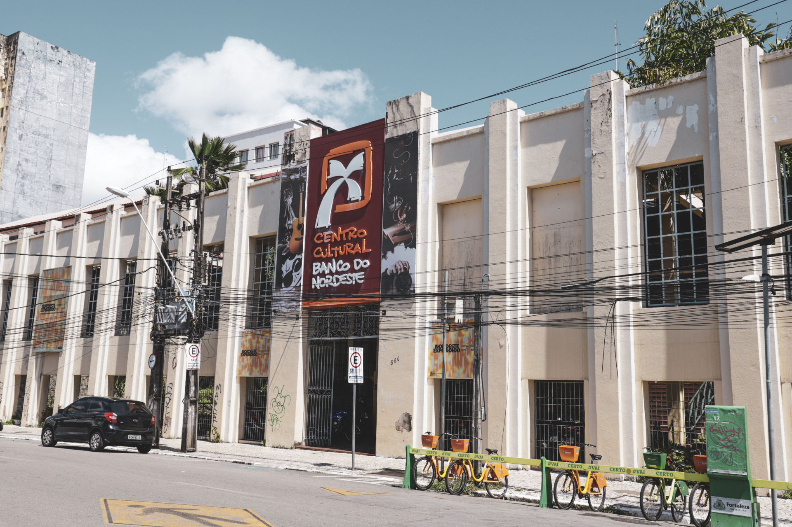
- Localização: Centro de Fortaleza.
- Carnaval de Fortaleza 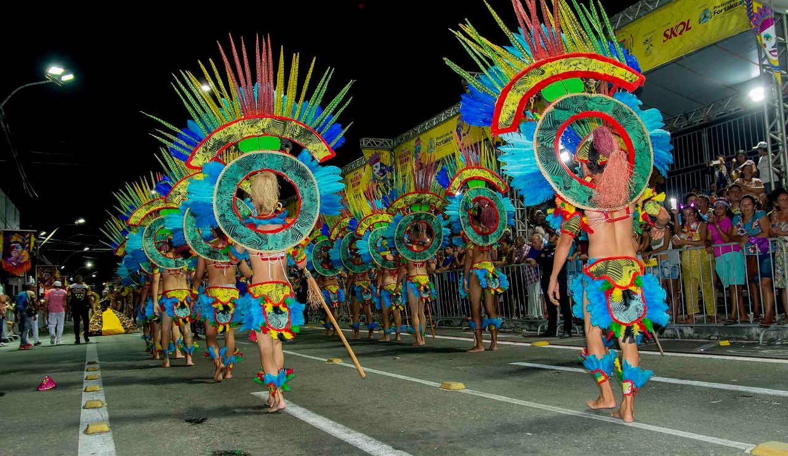
- Localização: Diversos pontos da cidade.
O Teatro José de Alencar é um dos mais importantes centros culturais de Fortaleza, conhecido por sua arquitetura clássica e por ser um local de apresentações de teatro, dança e música. Inaugurado em 1910, o teatro tem uma programação cultural diversificada e é um ícone da cidade em termos de cultura e arte.
O Museu Cearense é um dos mais tradicionais museus de Fortaleza. Localizado no Centro Dragão do Mar de Arte e Cultura, o museu possui um acervo de artefatos históricos e culturais do Ceará, incluindo peças indígenas, objetos da época colonial e exposições de arte moderna.
É uma parada obrigatória para quem deseja entender melhor a história do estado.
O Centro Cultural Banco do Nordeste é um dos principais espaços culturais de Fortaleza, com uma programação diversificada que inclui exposições de arte, apresentações de música e teatro. Localizado em um edifício histórico no centro da cidade, o centro promove eventos culturais gratuitos e acessíveis a todos.
O Carnaval de Fortaleza é uma das festas mais animadas da cidade, com desfiles de blocos e escolas de samba, além de festas de rua espalhadas pelos bairros. A festa é uma verdadeira celebração da cultura local, com a presença de ritmos como o frevo, axé e samba. Fortaleza também recebe atrações musicais de renome durante o Carnaval.